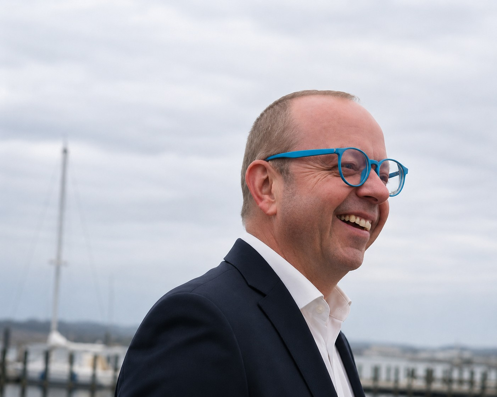

20+ Jahre
Internationaler Hotelbetrieb und Hospitality Operations
HOTELLERIE | FACILITY & TECHNICAL OPERATIONS | BUSINESS & DIGITAL OPERATIONS
Hotelbetrieb · Facility & Technical Operations · Business & Digital Operations
Seit mehr als 20 Jahren arbeite ich in komplexen internationalen Hotelumgebungen, in denen Gebäude, Technologie und Betrieb zusammenkommen.
Meine Erfahrung umfasst Facility und Technical Operations, IT-Infrastruktur und Hotelsysteme, Asset Management, Projekte, Budgets, Dienstleister und Teamführung.
Ich verbinde praktische Erfahrung aus unterschiedlichen Fachbereichen mit dem Blick für Betriebsumgebungen, in denen Zuverlässigkeit jeden Tag zählt.

Nachweisbare Erfahrung
Internationaler Hotelbetrieb und Hospitality Operations
Operative Verantwortung in komplexen Hotelimmobilien
Copenhagen Airport Hotel Cluster
Eine integrierte operative Perspektive
Erfahrung
Mein beruflicher Weg verbindet Technologie und physischen Betrieb – von Hotel-IT und Kommunikationssystemen bis zu Facility Management, Technical Operations und der Verantwortung für mehrere Hotelobjekte.
Ich habe Teams und Dienstleister, Gebäude und technische Infrastruktur, IT- und AV-Umgebungen, CAPEX und OPEX, Instandhaltungsprogramme, Energieinitiativen, Renovierungen und operative Projekte verantwortet.
Diese Kombination ermöglicht mir, einen Betrieb aus mehreren Perspektiven zu betrachten: Gebäude, Technologie, operative Abläufe und die Menschen, die auf alle drei angewiesen sind.
Was ich einbringe
Verständnis für Hotelbetrieb, Gästeerlebnis, Konferenz- und Veranstaltungsumgebungen sowie die Zusammenarbeit zwischen operativen Abteilungen.
Gebäudebetrieb, präventive Instandhaltung, BMS/CTS, HVAC, technische Infrastruktur, Compliance, Energie und Lifecycle-Planung.
Budgets, CAPEX/OPEX, Kostenkontrolle, Lifecycle-Entscheidungen, Investitionsprioritäten, Dienstleisterleistung und Business Continuity.
Hotel-IT, Netzwerke, WLAN, Telefonie, AV, Zutrittssysteme, digitale Plattformen und operative Technologie.
Praktisches technisches Verständnis
Mein technisches Wissen ist über viele Jahre durch operative Verantwortung, Inbetriebnahmen, Systemübergaben und Lieferantenschulungen gewachsen.
Ich ersetze keine Fachingenieure oder Spezialtechniker. Meine Aufgabe ist es, Systeme ausreichend zu verstehen, Störungen und Abhängigkeiten einzuordnen, die richtigen Fragen zu stellen, Fachfirmen zu koordinieren und zu beurteilen, ob eine Lösung technisch, operativ und wirtschaftlich sinnvoll ist.
Ausgewählte Ergebnisse
Begleitung von technischer Inbetriebnahme, Systemübergabe und operativer Stabilisierung eines großen Airport-Hotels.
Entwicklung von Lösungen zur Aufrechterhaltung kritischer Hotelprozesse während technischer und digitaler Störungen.
Verbesserungen in Energie, Wasser, Instandhaltung, digitaler Infrastruktur und technischen Betriebsprozessen.
Renovierung in fünf Phasen – Ballroom, Restaurant, Bar, Lobby und Zimmer – bei laufendem Hotelbetrieb, mit enger Koordination und minimaler Beeinträchtigung für Gäste und Betrieb.
Ausblick
Ich suche eine verantwortungsvolle Aufgabe in der Hotellerie, im Facility Management oder in einem vergleichbaren operativen Umfeld, in der meine Erfahrung aus Hotelbetrieb, Gebäudetechnik, digitalen Systemen und betriebswirtschaftlicher Steuerung einen praktischen Beitrag leisten kann.
Besonders interessant sind Aufgaben mit Verantwortung für Betrieb, Teams, Dienstleister, Budgets, technische Infrastruktur, Asset Performance und kontinuierliche Verbesserung.
Ich bin sowohl für Festanstellungen als auch für ausgewählte Projekt- oder Übergangsaufgaben offen.
„Führung misst sich an der Organisation, die man hinterlässt.“